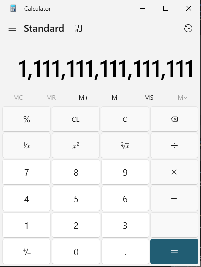
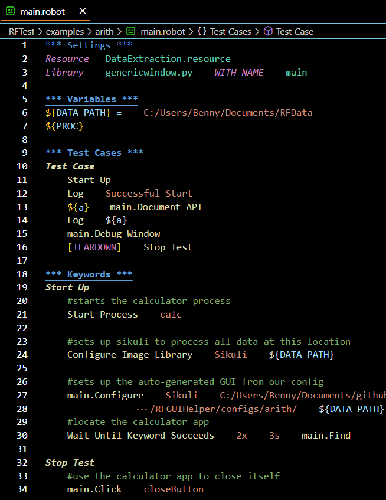
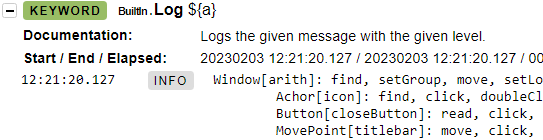
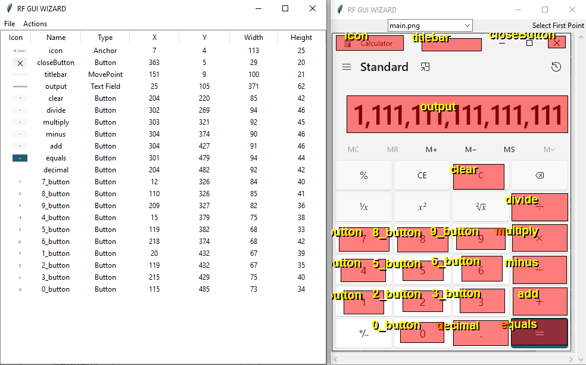
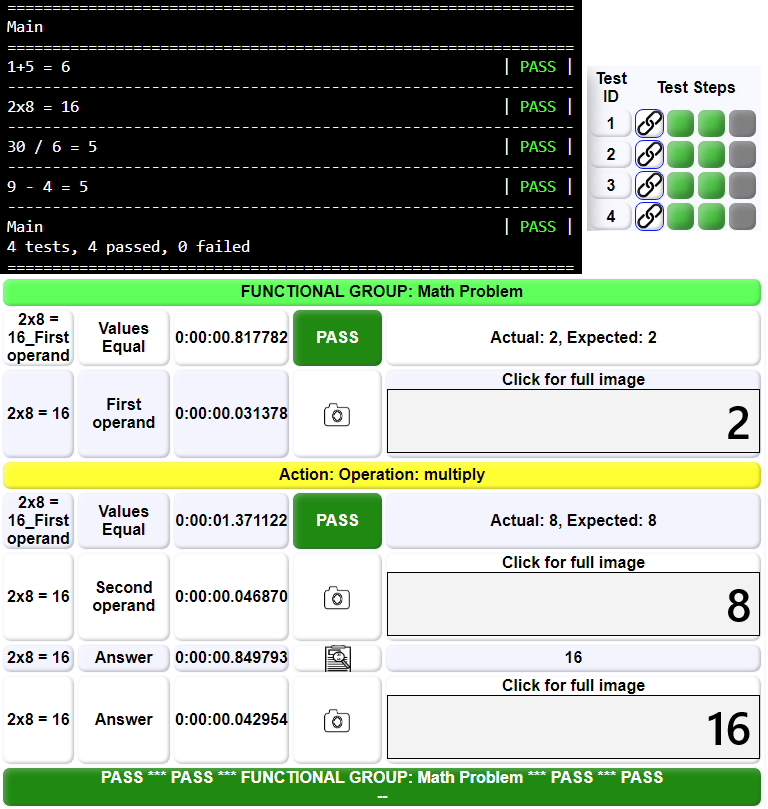

Robot Framework Training
This page covers the instructions for setup, development, and use of
Robot Framework. Robot Framework or RFW is a free set of libraries that
can be used to enable automatic testing. RFW is flexible and can easily
incorporate any tool or library through the Python language. In the course
of events, Dahlgren has developed a set of external files that assist in
and enhance the experience using RFW. This is the third set of such
libraries and thus we refer to it as RFW 3.0.
If you would like to see the original RFW training,
use this link.
This document is intended to be used as part of a hands on training
session and may be self-led. For the complete novice it is suggested
that you complete the instructions in order moving from configurtion,
to your first test, etc. until you have used all the RFW 3.0 features.
Experts may use the table of contents below to find any section of
interest.
Table of Contents
Configuration
Redhat Distribution
NOTE After some study, the list below is NOT sufficient
for installation in a RHEL environment. You will need several dozen more
libraries. Therefore, it is recommended that any offline installation be
facilitated by an offline RHEL repository from your administrator.
- Python3X*
- Python3X*-libs
- Python3X*-pip
- Python3X*-setuptools
- Python3X*-tkinter
- tcl
- tk
- tesseract-devel
- tesseract
- leptonica
- leptonica-devel
- java-XXXX-openjdk-devel
* - See discussion of python version
Python Libraries
Other
- RFW 3.0
- SikuliX Jar [link]
- Py4J Jar - Downloaded with Py4J python.
Operating System
RFW 3.0 works on Windows and should be compatible with any operating
system. These instructions, however, are written for a Red Hat
Enterprise Linux machine. If you are using a different operating
system you may have to adapt them for your system.
Versions
The download list is very dependent on the version of python selected.
Robot Framework works with Python 3.6+. The code in RFW 3.0 was written
for Python 3.10.8. You are free to pick any version of python which your
site will support subject to those constraints. If you pick a version between
the two ends you may have to roll back some of the more recent python
syntax found in the libraries. Whatever version of python you
choose, you must use the same version for all RHEL distribution files.
In these instructions we will simply refer to the selected version as
python3X.
There are two other version issues to consider in these downloads:
-
There is a table
which shows dependencies between python and Pillow. Make sure you
install a verison of pillow that works with the selected python3X.
-
SikuliX works only with Java 8+. You may use any version of Java above
that version.
Installing RHEL Packages
Each of the RHEL packages must be installed by the root (or SUDO)
role using the command yum install package-name. It
is recommended that you install tkinter, pip, tesseract-devel, and java-devel.
All the rest are installed as dependencies. After installing the packages,
find the command for python 3 in your system using which python3
or you can search the /user/bin/ folder. Sometimes the
system assigns names like python3.X depending on the selected version.
Python Pip Installs
If you are attached to the web you can automatically download and install
python libraries using python3 -m pip install package.
In the case of pillow you can specify the desired version number by adding
python3 -m pip install pillow==version_number. If you
are installing offline, you may point to any downloaded library path using
python3 -m pip install PATH.
Setting Paths
When the Py4J is pip-installed, it should savea Java Jar file on your system.
This is usually found in /usr/share/py4j or /usr/local/share/py4j. Locate
this Jar file. You will need to add that Jar file and the Sikuli Jar to your
CLASSPATH variable. This will ensure that they can be found during compilation
of the Sikuli Entry Point. For similar reasons, you will need to create/update
the runRobot.bat. This file is found in the RFW 3.0 deployment under RFTest and
it adds critical python file locations to a the PYTHONPATH and PATH variables.
The cricial locations are the widgets and OQE folders.
RFW 3.0 is also dependent on a reference to the data folder. This is a
folder which you can create exclusively for the purpose of recording RFW test
results. Once you have created the folder, you need to set the full path in
several places. Update each of these to match your data folder
deployment/RFTest/validation/test.robot- Search for
${DATA PATH} and replace the value with your own.
deployment/RFTest/RFDemoGUI/demoGUI.html- Search for
./../../../../RFData and replace with the relative path to your data folder. THERE ARE TWO
Please note that this is a "relative" path. So . is the folder with demoGUI.html and ./.. is one folder up (i.e. RFTest).
If your data folder is data in the same folder as deployment use:
./../../data/test.js
You also need to replace the "empirical" path for the RFTest folder.
deployment/RFTest/validation/test.robot- Search for
gui.Configure and replace the path to RFTest.
deployment/RFTest/runrobot.bat- Search for
testRoot and replace the path to RFTest.
System Validation
Under deployment/RFTest there is a validation project that
touches all the major features and will ensure your system is properly
configured. You may run either the windows or linux version of the
testconfig_OS.bat script. The script should lead you
through the following automated checks:
- Start the Java-Sikuli EntryPoint server.
- Start a test GUI that uses python3X, tkinter, and pillow.
- Run a RFW test that verifies the test GUI and logs data.
After the automatic steps successfully conclude, you may close the
open windows and verify the following:
- Open the auto-generated report
deployment/RFTest/RFDemoGUI/demoGUI.html.
Click on the first test link and verify the contents "Actual: Everying worked, Expected: Everything worked"
- Open the default log
deployment/RFTest/log.html and see all passes
- Expand "Configuration Checks" and locate "Prove it works" and "Document API". Expand the Log just after each line
- Verify "output.py is connected"
- Verify the list of actions for Window[validation]: find, setGroup, ..."
- Expand "Test Start" and Log
- Verify "Text read by tesseract: Working"
Congratulations! Your system is properly configured.
The Simplest Example
The first test case is meant to demonstrate the basics structure of a RF script
and the use of online documentation. The objectives for this lesson
are very simple. Learners will create a minimal viable product (MVP), a term for
the least amount of infrastructure and code to achieve the goal. In this case
the MVP is a working RFW test which purposely fails. The learner launches the
test and verifies that the correct behavior.
Instructions
-
Create a new folder under
deployment/RFTest/examples. Open a
simple text editor and save a new file as rfw1.robot in that folder.
Add the following required elements to the robot script.
*** Settings ***
*** Variables ***
*** Test Cases ***
*** Keywords ***
- Settings is where other libraries and extensions can be added to your test.
Later we will use this section to bring in reusable test components. In this case
we will import one of the standard RFW libraries. Add this line after settings.
*** Settings ***
Library String
WARNING Robot syntax requires a minimum of 3 spaces between
"keywords" and "parameters". We will get a handle on the vocabulary later, but in
the previous line "Library" is a keyword and "String" is the parameter. If you only
put one space (e.g. "Library String") that is not the same thing and you will have
an error in your test script.
- Variables is a place to declare any data values you want to track during the test.
RFW allows you to define variables within a keyword, for a test, or for a whole suite
of tests. In this case we will use a variable to enter a medium length word. You might
pick your favorite US state. Also save a numeric value.
*** Variables ***
${state} Virginia
${num} ${3}
In this case ${state} is the name of the variable. You can think of it as
a box to hold data. Here '$' indicates this variable contains a single variable. There
is a useful reference
demonstrating all the variable types and syntax.
In most computer languages all numbers are counted from zero and RFW is no exception
In this test we will try to find the 3rd character in the state name. Note that because
we start counting at zero, the 0th character is 'V'. Following this logic, the 3rd
character is 'g'. RFW does recognize different data types but most data is considered
to be text by default. Thus the word Virginia is text without any fancy wrapper.
This will be useful later. Unfortunately, the simple numeric value 3 must be wrapped
${3} to force it NOT to be text.
- Test cases are the actual test script and we will spend more time on that section
shortly. For now, let's create a simple test case that barely does anything.
*** Test Cases ***
Dummy Case
Call this
The anatomy of a test case is simple. Each test case gets a name which will appear in
the pass/fail report. After than RFW uses white space (i.e. the same 3 required spaces)
to indent the contents of the test case. Thus Dummy Case is the name of
the test case and Call this is part of its contents. Whatever its meaning
Call this must pass for the Dummy Case to pass.
- Keywords are the basic unit of a RFW script. In later lessons you will learn how to
create your own library of keywords for reuse in larger and more complex test scripts.
For now we will create the
Call this keyword which was suggested in our test
case.
*** Keywords ***
Call this
Fail Hello World
You should recognize that the anatomy of a keyword is very similar to a test case.
Call this is the name of the keyword and the contents of the keyword
are indented. In this case, Fail is another keyword that comes from
the RFW BuiltIn
library. That library is NOT found in settings and can be assumed in all your tests.
Let's explore the two libraries that we are using in this test. Here the BuiltIn
keywords can be reviewed and we can find the Fail keyword in particular.
We can use a similar set of links to examine the String
library and the Split String To Characters
keyword we will use in this test. The Robot Framework Foundation
owns RFW and maintains its extensive documentation and libraries. Among their offerings
are far more complete training resources. Perhaps for further reading. Our purpose in
visiting these libraries is to demonstrate the means at your disposal to find out more
about what keywords are out there and how they are used. Take a few minutes to look at
the examples shown in each case.
-
You have created a test! Now we are going to run it and show the features of RFW.
Open a terminal and navigate to the RFTest folder. Usually, you will run all your
RFW trests from this location. We do this with
runRobot.bat which sets
up relative paths for all the RFW3 libraries. The command is ./runRobot.bat ./example/yourfolder/rfw1.robot.
The run should produce something like this.

It is traditional that any new programmer should start with Hello World, but it is
unusual to achieve that goal by failing a test. Note here that the name of the test
case (i.e. "Dummy Case") shows up in the test and that it is marked as failed. This
is the only test case in the test, however, you could add another and each test
case would have its own line in this report. Note also that 1 test ran, 0 passed,
and 1 failed. These are the sorts of metrics that RFW can take as part of the
framework and without any effort on your part.

The default log is another useful product automatically generated by RFW. The report
is generated as an HTML file in RFTest and shows the test steps as a hierarchy. In
this way the test Rfw1 contains the case Dummy Case which
calls the keyword Call this which calls the keyword Fail
and produces the message "Hello World". In this hierarchical view you may catch your
first glimpse of the structure of Robot Framework. The redundant red markers leads
the tester to the point of failure and in future cases may be contrasted with green
markers that are collapsed by default--after all, nothing broke there.
Solution Scripts
Robot script
Using Keywords
In the previous test we created both a test case and a keyword without
making much distinction. In this test we will flesh out the concept of
a keyword and the distinction between a test case and a keyword. The
learner will create a test with multiple cases and a reusable keyword.
Instructions
-
Start by downloading and opening the solution from the previous lesson.
Resave it as rfw2.robot in the same folder.
-
We will begin by building one real test. You can delete the
Dummy Case
and the Call this keyword for good measure. We will begin
by creating a new test case. Run the test as before.
*** Test Cases ***
Read Character
Log ${state} is my state
You will notice right away that this time the command line shows a green pass for
the test case. This is the default position on all tests. Unless something happens
to halt execution (a bug or complete crash), your test will pass. In the previous
lesson we intentionally Fail the test which is sometimes an important
outcome. Open the default log and full expand to read the final output Virginia is my state.
-
Let's expand the test to search for the 3rd character as previously discussed. Here
we will use the
Split String To Characters keyword to get a list. In
RFW a list is a variable with an ordered group of values and is denoted with a '@'
instead of '$'. Note also that we will use the ${num} to identify one
specific character. The square bracket syntax [ ] indicates that we only
want the list value at that index. Run the text, read the log, and verify it found 'g'.
*** Test Cases ***
Read Character
@{characters} = Split String To Characters ${state}
Log The character is ${characters}[${num}]
At this point it is worth noting something for the developers. Normally, some value
or even some text would have to be aggregated before it could be printed like this.
The text "The Character is" is somehow automatically linked with the return value 'g'.
How? Under the hood, RFW uses python functions and this entire string will be seen
as plain text in Python. In the transition between ${characters}[${num}]
and text, the value of the RFW variable is substituted. The aggregate is simply interpreted
as text. This instance is making valuable use of the substitution step, but the default
text interpretation is also trouble. You might pass what you think is 1
but the python gets '1'. BEWARE! We'll talk
again soon.
-
Now we have a test case that verifies one aspect of the state and does nothing more.
It is a one-trick pony. To accomplish more with a test, we want to move the functionality
from the test case into a new keyword. This is called refactoring and more
specifically Extract Function.
The goal of refactoring is to maintain the same function while changing the form of
the script and in the process make it easier to work with. Because we want to verify
the same functionality we will build a second test case and then gradually add features.
For right now copy and paste the existing test case. Rename the new case however you
like. After each small step you can instantly rerun the test to verify that the
function remains the same.
*** Test Cases ***
Read Character
Log ${state} is my state
@{characters} = Split String To Characters ${state}
Log The character is ${characters}[${num}]
Read Character 2
Log ${state} is my state
@{characters} = Split String To Characters ${state}
Log The character is ${characters}[${num}]
Once you rerun the test you will see that there are now TWO test cases and both
pass. In the log too there are TWO test cases. A quick check shows that BOTH cases
have the same behavior and results.
-
Next we will create a keyword to
Find Nth Character. It won't do
anything yet, but we'll have the right format. In this structure we can see
two characteristics of a Keyword that are NOT part of test cases: parameters
and return statements. As previously discussed, parameters are separated from
a keyword by the requisite 3 spaces. A parameter is used to give the keyword
information it needs to do its job. RFW uses the synonym 'argument' in its
syntax. This keyword has two arguments/parameters (${text} and
${n}). Note that the [ARGUMENTS] always imeadiately
follow the keyword name and that each argument/parameter is separated by the
usual spaces.
*** Keywords ***
Find Nth Character
[ARGUMENTS] ${text} ${n}
@{characters} = Split String To Characters ${text}
[RETURN] ${characters}[${n}]
The return statement is the means of giving a value back from a keyword. In
this example we are going to find the Nth character and then we have to give
it back. The Nth character is returned from the keyword. This could be returned
to a test or another keyword--whatever called Find Nth Character.
That kind of flexibility means that this keyword can be used and reused in
different settings.
Few keywords are of much value without parameters and return statements. Maybe
the keyword is smart enough to find the data it needs elsewhere (e.g. reading
something off the screen). Maybe it can take some action that is more important
than returning a value (e.g. push a button). Whatever the case, flexible and
reusable keywords are easiest to make when you have parameters that allow input
to vary and a return statement that shares the result with the calling script.
NOTE the changes in this step will have NO effect
because the new keyword isn't called from anywhere in the test cases. We have
extracted the functionality, but not used it.
-
In this last step we will change the second test case to use the new keyword.
Because we have already extracted the functionality into the keyword, we only
have to figure out how to work with that keyword. In this case we pass the state
and the number to the keyword as parameters. Parameters have to be in the same
order, but the names of the parameters in the keyword (i.e.
${text}
and ${n}) don't have to match the values we pass (i.e. ${state}
and ${num}). Whatever value is returned will be stored in a temporary
variable ${a}. Afterward, we log that text. Run the test again and see
that all of our changes have not broken the function. In the mean time, we have
made a new, reusable keyword that will help with our future testing. That's refactoring.
Read Character 2
Log ${state} is my state
${a} = Find Nth Character ${state} ${num}
Log ${a}
-
Now that we have a reusable keyword, it's much easier to create a series of
test cases that use a set of parameters instead of copied code. Let's test
this out and use the Should Be Equal
keyword. You can copy these test cases and build more based on different
parameters. Try to make 10 or more. Test them and see the various pass/fail
answers per case.
*** Test Cases ***
Read Character 1
${a} = Find Nth Character ${state} ${num}
Log ${a}
Should Be Equal ${a} g
Read Character 2
${a} = Find Nth Character ${state} 2
Log ${a}
Should Be Equal ${a} g
Read Character 3
${a} = Find Nth Character ${state} ${num}
Log ${a}
Should Be Equal ${a} i
Read Character 4
${a} = Find Nth Character ${state} 2
Log ${a}
Should Be Equal ${a} r

Solution Scripts
Robot script
Data-Driven Testing
Starting with this lesson the instructions will focus less on line-by-line
code instructions and more on guidance. Training wheels are off, but we aren't
letting go just yet. This lesson also introduces Data-Driven Testing or DDT
which is a testing paradigm where one test script is enabled by multiple
test cases in the form of parameters. The learner will convert the
very duplicative last lesson into a DDT paradigm which makes more sense.
Instructions
-
Start by downloading and opening the solution from the previous lesson.
Resave it as rfw3.robot in the same folder.
-
If you look at the last lesson you will see that the test cases are
very repetitive. This is not at all unusual. A lot of tests suffer
from a need to test variations on a theme. Start by creating a new
keyword that would do the same job with parameters. Create parameters
for the text, the number, and the expected value.
-
For DDT, we need to identify one keyword, the one we just created
which will act as the
Test Template. In other words,
this new keyword is the test script and we will activate it with
different parameters for each test case. We identify the Test
Template in the settings.
*** Settings ***
Library String
Test Template Read Character
For DDT in RFW the Test Template is required, but there are four
other specialized keywords that can be defined for a single DDT test. These
are not required, but may be a good idea. As shown in this image, the
designated keywords are executed in a fixed order. While only five keywords
are used in DDT, you are not limited. Remember that a keyword can call
another keyword. With these five keywords we are defining five "jumping off"
points which can contain as much or as little as we want. Which can call
other keywords if desired.

Suite Setup is called
before everything else in order to configure the system for test. This
process brings up everything in a default state and may pull up auxiliary
elements (e.g. the Java-Sikuli server). At the very end of the test is
Suite Teardown which performs a complementary service,
closing things down, shutting off auxiliary services, and posting final
data. At the individual test case level there are similar setup and teardown
keywords. These are more likely used to configure the parameters for a
specific test (e.g. "Is the light switch currently ON before we start")
and restoration to the safe, default state after a test. The Test Teardown
is especially important if the next test will depend on starting in a
safe space. Are all my services still up? Did I remember to turn off the
lights? In this test we will only use the Test Template but
we will see the others soon.
-
Now it's time to address the test cases themselves. In a DDT configuration
RFW still has test cases, but it represents each case as just one line of
parameters. Based on the test cases demonstrated in the last lesson, these
are the four test cases one might use. Note that each line has a test name
which can be quite informative. After that each paramter can be either a
value or one of the variables. In this case I added a fourth variable which
says if I expected to find the matching value. It's counter intuitive, but
if the test doesn't find a match and I didn't expect to
get a match, that's still a pass. We will deal with that in a minute. Use
your own test cases from lesson 2 to create more test cases following this
pattern.
*** Test Cases *** String Index Char Match
Find g ${state} 3 g True
No find g ${state} 2 g False
No find r ${state} 3 r False
Find r ${state} 2 r True
You may have noticed that the parameters of the test case are all aligned vertically.
This was intentionally done with a combination of tabs and spaces (always at least one
tab or 3 spaces). We have found that aligning your paramters allows you to
directly compare your test cases and identify problems. On the Test Cases
line there are even names for the parameters. They have no effect on RFW
but are also helpful to the test writer. It's easier to remember what 'g'
or 'r' means if you put a label on it.
-
Let's add that fourth parameter to our Test Template keyword and decide how
to handle it. In this case we want to either use
Should Be Equal
or the similarly obvious Should Not Be Equal. And we want our new
parameter to tell us which to use. The natural way to handle this is to
Run Keyword If
there is a match or not a match. Because Run Keyword If has a built
in ELSE feature, we can include both actions on the same line.
Work on your own to build a simple If-Else using the Should and Should Not checks.
Remember that you can run your test multiple times as you think you have
reached incremental stopping points.
-
There is nothing holding us to the state and number we chose. We are free
to create entirely new cases. You can add more variables to create standard
components or you may enter any text you want in any individual test case.
Experiment and rerun your tests periodically. Be sure to look at the default
log as well.
Solution Scripts
Robot script
Working with a GUI
In this session, we will investigate the use of a GUI and how
sikuli and robot framework interact with the GUI. In order to
simulate a complicate GUI we are going to use the typical calculator
app available with each operating system. You may
repeat these steps with any application on your target computer.
This session will repeat the basic RFW setup and use the RFGUIHelper
and Sikuli to find the GUI and close it. Later we will expand
the use of GUIs in testing.
NOTE: You will need to start the SikuliServer
before running any Sikuli test. Run deployment/RFTest/SikuliEntry/javaserver.bat.
You may consider making this an automatic process during Suite Startup.
Instructions
-
Start this test by taking a full screen capture of the GUI you
wish to test against. Keep it simple this time. We just need
the main window.

-
Start the GUI helper from
/deployment/RFGUIHelper/
using python3x RFGUIHelp.py. Select File > New.
Give a name to your project and navigate to find the screen
capture you just made. You will see two windows. The table
window shows a row for each widget while the picture window
shows the image overlaid by all the widgets.

-
We will create three important widgets for your basic GUI. To
create a widget, identify the place you want and click the upper-left
corner. Now click the lower-right corner. This will pop up a
third window where you can edit the widget. Note that the edit/add
window shows the exact image captured between the two corners.

In the edit/add window you can manually adjust the dimensions of
the widget, give it a name, and select a type. Some types have
additional data. Here we are using the edit/add window to create an anchor.
An ANCHOR is a portion of the GUI which will not
change and may be used to find the window on the screen.
Here we are using the title bar and a window icon as a reliable
anchor. Note that some GUIs have multiple eligible anchors
and you may define several.
-
We will also add a widget for the close button and a movepoint. Your GUI may
vary. The close BUTTON will, of course, close the application when
you click on it. The MOVEPOINT is a place on the GUI which can be
dragged to move the window. Most windows are draggable. After you are satisfied
with each widget, close and save the RFGUIHelper.

-
In the same folder as RFGUIHelp.py is the
config folder. Inside
you will find the folder you created and the files for that window. Note that
each anchor is saved as a .png image file, the original screenshot was copied,
and a .json file controls the project. Aside from path data for the project,
the JSON contains a detailed definition of each widget.

-
Now we are going to examine in detail the way that the GUI configuration file
is integrated into a RFW test. The file shown below contains all the elements
you are familiar with and some required for the GUI interaction with Sikuli.
First, the settings imports both the DataExtraction resource file, of which
we will hear more, and genericwindow.py. The DataExtraction library enables
certain Sikuli operations, but genericwindow is the auto-generated GUI for
your test. In past versions of RFW you would have to create your own low-level
code to connect with the GUI components. Now, genericwindow contains all the
keywords you will ever need.

Still, genericwindow is a blank slate until it is configured. In the Start Up
keyword, we will use the configuration file to change that. On line 24 we
call Configure Image Library which is required for RFW 3.0 testing.
Among other things it sets up sikuli and ensures your data is all routed to
the same folder. On line 27 we call Configure from generic window
and we pass it the folder for the GUI configuration file. In the overlap you can
see that the folder name ends with '/' and we include the same data path.
How does this work? In genericwindow.py (or more correctly the parent class
window.py) the Configure process parses the config file and
gathers all the data you have provided. Among other things it creates a list
of named widgets and adds them to the GUI. Now you can access any of the
widgets from keywords built into genericwindow. An example is shown on line
30 where we call main.Find. The Find function searches
the screen for any of the Anchors. Once the anchor is found, the relative (x,y)
location of all widgets is updated. In this case we are using Find to ensure
the calculator app is on the screen. After finding we can begin testing. Note
that when the app is closed, Stop Test also calls main.Click
and selects the closeButton we identified earlier.
Finally, let's examine the very simple Test Case. It begins and
ends by calling keywords to setup/stop the test. Note the use of [TEARDOWN].
This is a useful feature for test cases (or [KEYWORD TEARDOWN] for
keywords) to enforce a final cleanup even when the test case has failed. TEARDOWN
will always run and close the window. The test case also documents the API for
main. There are two keywords that can be used by the tester to get
information contained in the config and verify the GUI is properly working.
Document API- This function creates text, suitable for
logging, that describes each widget in the window and all of the functions it
supports.

Debug Window- This function highlights each widget on
on the screen for a fraction of a second. It is useful to see where genericwindow
believes the widgets are and to verify the placement is correct.

Solution Scripts
Robot script
Config JSON
Recording the Test
In this session we will create a real test against this application. This is
exciting. We are going to create test cases, keywords, and gather data to
auto-generate a test report. We're going to treat this seriously, even though
it will still be the calculator app.
Instructions
-
Obviously, the GUI has been reviewed considerably and we have a more
extensive list of widgets. Note that the table shows all 21. If you
wanted to edit one, click on that row and the same editor pops up.

-
We will start with the same script as the last exercise and this time
we will set up in a DDT paradigm with test cases for each of the
four operations. In settings we align
Start Up and Stop Test
with appropriate DDT keywords. Under test cases we give each case a
name that fully describes the case. There are four parameters which
will enable Operation
*** Settings ***
Resource DataExtraction.resource
Library genericwindow.py WITH NAME main
Suite Setup Start Up
Test Template Operation
Suite Teardown Stop Test
* * *
*** Test Cases ***
1+5 = 6 1 5 add 6
2x8 = 16 2 8 multiply 16
30 / 6 = 5 30 6 divide 5
9 - 4 = 5 9 4 minus 5
* * *
Operation
[ARGUMENTS] ${operand1} ${operand2} ${op} ${answer}
main.Find
main.Click clear
Type Number ${operand1}
main.Click ${op}
Type Number ${operand2}
${a} = main.Read ${output}
Run Keyword If ${a}!=${answer} Fail
What does the operation (our Test Template) do? First it finds the
window and clears any previous data. Arguably this could be moved
to a Test Setup, but we'll leave it here for now.
We need to read in a number by clicking buttons, but for now we
will only name a proposed keyword Type Number. We
test by typing one number, clicking on the operator (e.g. '+')
and then typing the next number. After clicking equals we can
read the output. If there is a mismatch the test fails. This is
a complete test and you can run the four cases to get a result.
-
To create
Type Number we need to use the Split String To Characters
seen earlier. In the keyword we will split the number into a list of ${digits}.
This time we will use a FOR loop. RFW uses a FOR
to look at each character in the list. We will use that opportunity
to Click on the appropriate button. Note that
Type Number
[ARGUMENTS] ${NUM}
${digits} = Split String To Characters ${NUM}
FOR ${digit} IN @{digits}
Run Keyword main.Click ${digit}_button
END
-
Now, if you run this test and have some problems, that's not
surprising. We have a test script, but we aren't gathering any
data--what we refer to as Objective Quality Evidence or OQE.
We need to record data to find out what is happening and fix
the script. What kind of OQE should we gather? This list shows
the standard which is desired on all tests. These OQE steps
create an audit trail so that by reviewing the report one
has as much data as if you had observed the test live.
- When you start some action...
- Mark the action
- If something can be seen...
- Take a picture
- If there was a change in conditions...
- Record the data before and after
- If you enforced some change...
- Verify that it took
- If you expected some outcome...
- Record what you found
Verify it matched
- When you finish some action...
- Mark the action
- If something went wrong...
- Fail the test
-
Let's apply these rules to our test. The first action is when
we clear any existing data. So let's add some OQE gathering.
Archive Any Previous Data
New Test Event ${TEST NAME}
First, we will archive OQE data and create a test case. These
are commands in the DataExtraction library that clear any previous
report and start a new line. Archive Any Previous Data may be
appropriate for Suite Startup. New Test Event belongs
in at the start of the Test Template or even the
Test Startup. The ${TEST NAME} is a
built in variable that always has the case name (e.g. 1 + 5 = 6).
-
Now we can examine appropriate OQE steps added around the one
line
main.Click clear. The
section begins with Record Action and ends with
Keyword Final. These are meant to deliniate this
action from all others and to create a Green/Red block in the
report. Note the solid yellow and green lines across the detailed
report, corresponding to these lines in the script. In addition
we take a screen capture of the cleared input and read the value.
Both are recorded in the report and the pass/fail criteria for
this section is created by Assert OQE Values Equal.
Looking at the report, it is visually verifiable that the value
was zero and we have a quick pass/fail verification of that data.
As promised, if you only read the report you could still verify
the test results.

It is worth noting that all of these OQE keywords come from DataExtraction.resource.
That is a small library with full documentation at deployment/RFTest/Doc/dataextraction.html.
Broadly, the library has keywords for report formatting (action,
soft, and hard breaks), asserting pass/fail criteria (e.g. two
values are equal), and recording test data. There are also data
charts (courtesy of chart.js)
for data reporting per test or per suit of tests. Finally, note
the name Keyword Final. These one keyword is so
typical as part of TEARDOWN that it was specifically
added for the purpose. Recall that teardown is enforced even if
the keyword or test fails. Keyword Final captures the final state
and adds that content to the report. As in the example shown above
if the criteria passed a green block and line will be added to
the report. If the criteria failed... you get red. All of this suggests
that the various data gathering and reporting around the clearing
action may be extracted into its own keyword.
-
One may debate which sections of the test form a cohesive "unit"
worthy of OQE and indeed its own keyword. Two criteria should be
considered: Is the block repeated anywhere in the test? Will the
block be reused by any other test? If either answer is yes, it
should be extracted in this way. We can do something similar with
the two operands and the operator. In effect all the next block
until we hit '=' is one action. We can wrap it with OQE and expect
that
Math Problem is a reusable component in future
tests. Extract those lines and add the following OQE:
- Record the action and add Keyword Final.
- Take a picture of each complete number
- Read the value of each complete number
- Verify that the numbers match expectations
- Record the final result, maybe adding a picture
-
In doing the last activity, you may have noticed an oversight
that caused the test to fail. It was missing the line
main.Click equals.
Not only does adding OQE help us to verify test results, but
it is also a valuable way of verifying the test script. If
an action happens, we need OQE. If we need OQE, then the action
should be verified. Creating this new keyword should add a second
block to our report and additional data in the detailed report.

-
While it's nice to see all the green Pass results, we aren't quite done.
We need to verify the final result matches our expectations.
Right now we are using
Fail but that doesn't produce
useful OQE. Go back to the final action. We already recorded
the result in both picture and value. Now, we just need to
verify the results and summarize our test results. Let's backtrack
to Clear Data and Math Problem. In
each case the last line (just before Keyword Final) should be
a variant on Run Keyword If ${a}!='PASS' Fail.
This means that each keyword has the potential to fail the
whole test. Within our test case we can take some creative
steps to ensure a more useful output. In each case:
- You can anticipate the cause of failure for that keyword
- You can report the final result
- You can update in the event that the keyword passes
Solution Scripts
Robot script
Config JSON
Resource Files
This last session will focus on resource files. Up to now
we have used .robot files, but now we will
learn how and when to create a .resource file.
Recall that robot files are tests. As such they are
designed for one use only. In order to create reusable code
for use in multiple tests, you must use a resource file. In
this session we will turn the last test into a resource file.
Instructions
-
Let's start with the solution file from the last test. In this
case we will copy and rename as a
.resource. Right
away there are things that we can strip out because they should
be part of a test. Instead, this resource will be used for the
standard calculator.
${DATA PATH} should be removed from variables.- Get rid of all the
*** Test Cases ***.
- It is debatable if the DataExtraction resource file should remain,
but it certainly does no harm. On the other hand all the
DDT keyword definitions belong only in a test file.
- The
Operation keyword was the Test Template
and it has no business in the resource file.
- For similar reasons, remove
Start Up and Stop Test.
-
Just as we removed things that had no business in a resource file,
there are some things we should either add or rescue from the removed
code.
- Create a new keyword to start the calculator. You can use pieces
rescued from
Start Up.
- Create a new keyword to close the calculator using pieces from
Stop Test.
Type Number is set up for numbers only. We might
consider adding two new features. It is possible that you could add
a regular expression check to validate number formats. It really
depends on how complex your tests would be.
- Flipping the sign -/+ when the number includes '−'
- Inserting a decimal point when the number includes '.'
- Add buttons to the GUI for square, square root, etc.
- Create new "problem" keywords for each of these functions. Again
for this example you can get as detailed as you like.
-
Don't forget to add the OQE for your report. At the very least you have
actions to record and if you can determine what the correct course of
action should be, validate that as well.
-
The goal of this resource is that it can be used to operate the calculator,
perhaps as part of a larger test. It should have keywords that allow a test
to start the calculator, type various numbers, perform various operations,
read and clear the results, and close the calculator again. We don't have
any test in mind at this time, just preparation for potential uses.
-
After refactoring the test file into a resource, we can return to the
.robot file. Create a copy and rewrite to include just
the test portion. As we intended, import the new resource file and use the
new keywords to recreate the same test effects.
Solution Scripts
Robot script
Resource script
Config JSON